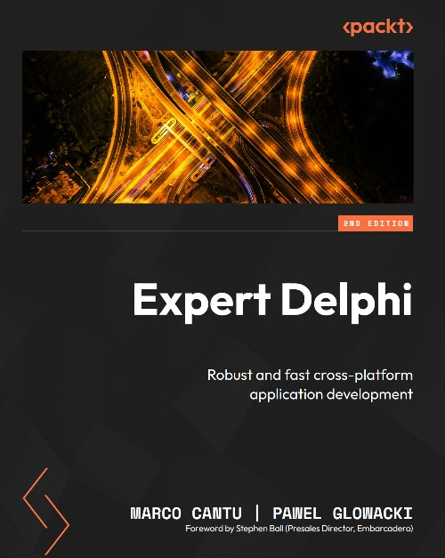

Expert Delphi (second edition)
Published by : Packt
Writed by : Marco Cantú, Pawel Glowacki
Published date : 23/02/2024
ISBN-10 : 1805121103
ISBN-13 : 9781805121107
Language :  English
English
Web site : https://www.packtpub.com/product/expert-delphi-second-edition/9781805121107
About Expert Delphi (second edition)
Harness the power of the Delphi IDE and programming language, coupled with the FireMonkey library, to develop modern desktop and mobile apps with high speed and natively compiled efficiency from a single source code base
Key Features
- Understand the fundamentals of Delphi for building multi-device applications
- Build desktop and mobile apps with the help of extensive examples that guide you through each step
- Apply advanced features, such as parallel programming and multi-tier full-stack solutions, based on web connectivity
Book Description
- Master Delphi, the most powerful Object Pascal IDE and versatile component library for cross-platform native app development, by harnessing its capabilities for building natively compiled, blazingly fast apps for all major platforms, including Android, iOS, Windows, Mac, and Linux.
- Expert Delphi begins with a quick overview of Delphi, helping you get acquainted with the IDE and the Object Pascal language. The book then quickly progresses to more advanced concepts, followed by the architecture of applications and the FireMonkey library, guiding you through building server-side services, parallel programming, and database access. Toward the end, you'll learn how to integrate your app with various web services and deploy them effectively.
- By the end of this book, you'll be adept at building powerful, cross-platform, native apps for iOS, Android, Windows, and macOS-all from a single code base.
What You Will Learn
- Configure the Delphi IDE for mobile development, use Object Pascal, and build apps
- Manage core Delphi technologies, including parallel programming, JSON, XML, and FireMonkey
- Explore FireMonkey 3D features, UI styles, and mobile OS integration to build powerful apps
- Extend your apps to desktop using the same source code and set of technologies to expand opportunities
- Build web services integrate them with your UI for a holistic developer experience
- Deploy apps to devices and online stores, streamlining distribution and facilitating monetization
Who this book is for
If you're a Delphi developer exclusively versed in Windows applications and aspire to venture into mobile platforms, this book will pave the way for you to become an expert in this space. It serves as a guide for mobile developers or developers in general, proficient in other programming languages and frameworks, to harness the productivity that Delphi and FireMonkey offer.
Where to buy ?
This book has the ISBN13 "9781805121107".
If it is still available for sale, you can order it in your favorite bookstore, by its publisher or online at
Amazon CA,
Amazon FR,
Amazon JP,
Amazon UK or
Amazon USA depending on your country.
Table of content
- Fasten Your Seat Belts
- Mind Your Language
- Packing Up Your Toolbox
- Using the Parallel Programming Library
- Playing with FireMonkey
- FireMonkey in 3D
- Building User Interfaces with Style
- Working with Mobile Operating System
- Desktop Apps and Mobile Bridges
- Embedding Databases
- Integrating with Web Services
- Building Mobile Backends
- Easy REST API Publishing with RAD Server
- App Deployment
- The Road Ahead